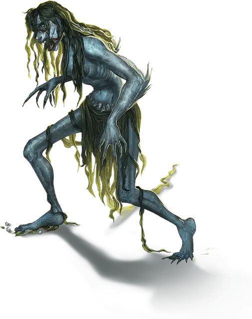

Морская карга
Sea Hag
Средняя Фея (Фея), хаотично-злая

Класс Доспеха 14 (природный доспех)
Хиты 52 (7к8 + 21)
Скорость 30 футов, плавая 40 футов
| мод | спас | ||
|---|---|---|---|
| СИЛ | 16 | +3 | +3 |
| ЛОВ | 13 | +1 | +1 |
| ТЕЛ | 16 | +3 | +3 |
| мод | спас | ||
|---|---|---|---|
| ИНТ | 12 | +1 | +1 |
| МДР | 12 | +1 | +1 |
| ХАР | 13 | +1 | +1 |
Чувства тёмное зрение 60 футов, пассивное Восприятие 11
Языки Общий, Акван, Великаний
Опасность 2 (450 опыта)
Бонус мастерства +2
Среда обитания Побережье, Арктика
Особенности
Амфибия. Карга может дышать и воздухом и под водой.
Кошмарная внешность. Все гуманоиды, начинающие ход в пределах 30 футов от карги, и видящие её истинный облик, должны совершать спасбросок Мудрости Сл 11. При провале существо становится испуганным на 1 минуту. Существо может повторять этот спасбросок в конце каждого своего хода, с помехой, если карга находится в пределах линии обзора, оканчивая эффект на себе при успехе. Если спасбросок существа был успешным, или эффект на нем окончился, оно получает иммунитет к Кошмарной внешности этой карги на следующие 24 часа.
Если цель не захвачена врасплох, и обнаружение истинного облика карги не было неожиданным, цель может отвести взгляд, чтобы не совершать спасбросок. В этом случае отводящее взгляд существо до начала своего следующего хода совершает с помехой броски атаки по карге.
Шабаш карг. Когда нужно работать сообща, несмотря на эгоизм, карги собираются в шабаши. В шабаш могут входить разные ведьмы, в нем они считаются равными. Тем не менее, каждая жаждет личной власти.
Шабаш — это три карги, и конфликт между двумя всегда может решить третья. Если встречается больше трех карг, например, когда возникает конфликт между несколькими шабашами, все погружается в хаос.
Морская карга, состоящая в шабаше (смотрите врезку «шабаш карг»), имеет показатель опасности 4 (1100 опыта).
Совместное колдовство. Если все три представительницы шабаша находятся в пределах 30 футов друг от друга, каждая может накладывать следующие заклинания из списка волшебника, но ячейки заклинаний у них общие на всех.
• 1 уровень (4 ячейки): луч болезни [ray of sickness], опознание [identify];
• 2 уровень (3 ячейки): поиск предмета [locate object], удержание личности [hold person];
• 3 уровень (3 ячейки): контрзаклинание [counterspell], молния [lightning bolt], проклятие [bestow curse];
• 4 уровень (3 ячейки): воображаемый убийца [phantasmal killer], превращение [polymorph];
• 5 уровень (2 ячейки): наблюдение [scrying], связь с иным миром [contact other plane];
• 6 уровень (1 ячейка): разящее око [eyebite].
При накладывании этих заклинаний каждая карга считается заклинателем 12 уровня, использующим Интеллект в качестве базовой характеристики. Сл спасброска от заклинаний равна 12 + модификатор Интеллекта карги, а бонус атаки заклинанием равен 4 + модификатор Интеллекта.
Глаз карги. Шабаш может создать магический предмет, называемый глазом карги, который делают из настоящего глаза, покрытого лаком, подвешенного на манер кулона. Обычно глаз доверяют помощнику, для сохранения и переноски. Карга в шабаше может действием посмотреть через этот глаз, если он находится на одном с ней плане. У глаза карги КД 10, 1 хит и тёмное зрение в радиусе 60 футов. Если его разрушить, все члены шабаша получают 3к10 урона психической энергией и становятся ослепленными на 24 часа.
У шабаша может быть только один глаз одновременно, и создание нового требует проведения ритуала всеми тремя участницами. Ритуал занимает 1 час, и карги не смогут совершить его, будучи слепыми. Если во время совершения ритуала какая-нибудь карга совершает любое лишнее действие, шабаш должен начинать ритуал заново.
Действия
Когти. Рукопашная атака оружием: +5 к попаданию, досягаемость 5 футов, одна цель. Попадание: Рубящий урон 10 (2к6 + 3).
Смертельный взгляд. Карга нацеливается на одно испуганное существо, которое видит в пределах 30 футов от себя. Если цель видит каргу, она должна преуспеть в спасброске Мудрости Сл 11 от этой магии, иначе её хиты опускаются до 0.
Иллюзорная внешность. Карга покрывает себя и все, что несет и носит, магической иллюзией, заставляющей её выглядеть как другое уродливое существо примерно её размера и с гуманоидным телом. Иллюзия оканчивается, если карга умирает, и карга может окончить её бонусным действием.
Изменения, внесенные эти эффектом, не проходят физическую проверку. Например, карга может скрыть когти на пальцах, но тот, кто коснется её руки, почувствует когти. Если же полагаться только на зрение, то существо должно действием совершить проверку Интеллекта (Расследование) Сл 16 и преуспеть, чтобы понять, что была использована иллюзия.
Описание
Морские карги живут в мрачных и грязных подводных логовах, в окружении водянников и других водных чудовищ.
Красота приводит морских карг в ярость. Когда морская карга сталкивается с чем-то красивым, она может просто атаковать, или испортить это. Если что-то прекрасное даёт надежду, морская ведьма хочет вселить отчаяние. Если что-то внушает мужество, морская ведьма хочет вселить страх.
Уродство внутри и снаружи. Морские карги являются самыми уродливыми из всех карг. Склизкая чешуя покрывает их мертвенно-бледную кожу. Волосы морской карги похожи на водоросли и покрывают её тощее тело, а её стеклянные глаза выглядят безжизненными, как у куклы. Также морская карга может скрывать свой истинный облик под покровом иллюзии, но из-за проклятья она все равно кажется уродливой. В лучшем случае она может притвориться нищенкой.
Шабаш. Морская карга, состоящая в шабаше (смотрите врезку «шабаш карг»), имеет показатель опасности 4 (1100 опыта).
См. дополнительно статью: "Бестиарий: Карги"